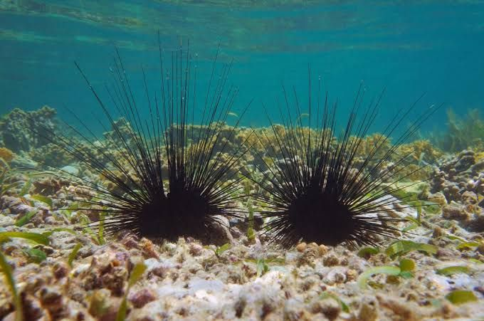
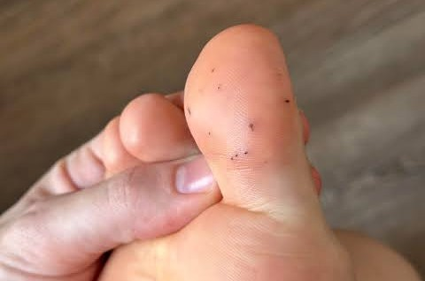
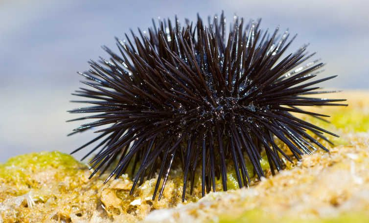

Tussen de rotsen
Zee-egels vind je vooral tussen rotsen en stenen. De kans dat je erop stapt is niet groot, maar het kan gebeuren als je zonder schoenen het water in gaat.
Vooral tussen rotsen – opletten bij barefoot lopen.

Zee-egels vind je vooral tussen rotsen en stenen. De kans dat je erop stapt is niet groot, maar het kan gebeuren als je zonder schoenen het water in gaat.

Bij rotsachtige stranden bij voorkeur waterschoenen dragen en letten waar je loopt. Stap je toch op een zee-egel, dan kunnen er kleine stekeltjes in de huid achterblijven.

Met een beetje opletten kun je zorgeloos genieten van de zee.
Mostly among rocks – be careful walking barefoot.
Sea urchins are mainly found among rocks and stones. The chance of stepping on one is not high, but it can happen if you enter the water barefoot.
On rocky beaches preferably wear water shoes and watch where you step. If you do step on a sea urchin, small spines can stay in the skin.
With a little care you can enjoy the sea without worry.
Vor allem zwischen Felsen – barfuß vorsichtig sein.
Seeigel findet man vor allem zwischen Felsen und Steinen. Barfuß ins Wasser kann unangenehm enden.
An felsigen Stränden besser Wasserschuhe tragen und auf den Weg achten.
Mit etwas Vorsicht kannst du unbesorgt das Meer genießen.
Soprattutto tra le rocce – attenzione a piedi nudi.
I ricci si trovano soprattutto tra rocce e sassi. Entrare in acqua a piedi nudi può finire male.
Daha çok kayalıklarda – çıplak ayakla dikkat.
Deniz kestaneleri daha çok kayalık ve taşlık yerlerde bulunur. Çıplak ayakla denize girmek riskli olabilir.
Sobre todo entre rocas – cuidado descalzo.
Los erizos se encuentran sobre todo entre rocas y piedras. Entrar al agua descalzo puede acabar mal.